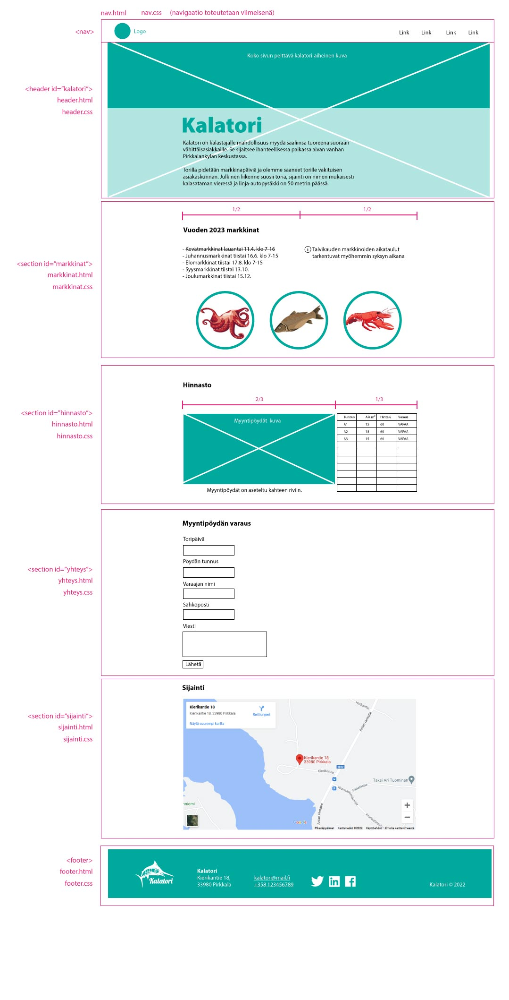

Demo 5 - Kalatori: Kasaus
html_css_basics
|
├── demos
| |
│ └── d5_kalatori
| |
│ ├── index.html
│ ├── footer.html
│ ├── footer.css
│ ├── sijainti.html
│ ├── sijainti.css
│ ├── yhteys.html
│ ├── yhteys.css
│ ├── hinnasto.html
│ ├── hinnasto.css
│ ├── markkinat.html
│ ├── markkinat.css
│ ├── header.html
│ ├── header.css
│ ├── common.css
| |
│ └─── img
│ │ ├── kuva_1.jpg
│ │ └── kuva_2.jpg
|
Tehtävä
- Luo uusi tiedosto index.html
- Tee tällä kertaa HTML-tiedostoon head ja body
- Linkitä kaikki CSS-tiedostot index.html headiin
- Kopioi kukin toteutettu osio (header/section/footer) juuri luodun index.html body tagin sisälle peräkkäin
- Tarkista, että kokonaisuus toimii ja näyttää suunnitteen layout-suunnitelmakuvan mukaiselta
- Toteuta puuttuvat osiot tai lisää toistaiseksi niiden tilalle dummy-osio esim:
<section id="markkinat">Markkinat</section>
